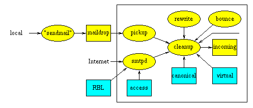

Postfix
Anatomy - Receiving Mail
Postfix
Anatomy - Receiving Mail
Up one level | Receiving Mail | Delivering Mail | Behind the Scenes | Command-line Utilities
When a message enters the Postfix mail system, the first stop on
the inside is the incoming queue. The figure below shows
the main components that are involved with new mail. For an
explanation of the symbols used, click on the icon in the upper
left-hand corner of this page.

- Mail is posted locally. The Postfix sendmail program invokes the privileged
postdrop program which deposits the
message into the maildrop directory, where the message is
picked up by the pickup daemon. This
daemon does some sanity checks, in order to protect the rest of
the Postfix system.
- Mail comes in via the network. The Postfix SMTP
server receives the message and does some sanity checks, in
order to protect the rest of the Postfix system. The SMTP server
can be configured to implement UCE controls
on the basis of local or network-based black lists, DNS lookups,
and other client request information.
- Mail is generated internally by the Postfix system itself, in
order to return undeliverable mail to the sender. The bounce or defer daemon brings the bad
news.
- Mail is forwarded by the local
delivery agent, either via an entry in the system-wide alias database, or via an entry in a
per-user .forward file. This is
indicated with the unlabeled arrow.
- Mail is generated internally by the Postfix system itself, in
order to notify the postmaster of a problem (this path is also
indicated with the unlabeled arrow). The Postfix system can be
configured to notify the postmaster
of SMTP protocol problems, UCE policy violations, and so on.
- The cleanup daemon implements the
final processing stage for new mail. It adds missing From:
and other message headers, arranges for address rewriting to the
standard user@fully.qualified.domain form, and optionally
extracts recipient addresses from message headers. The cleanup
daemon inserts the result as a single queue file into the
incoming queue, and notifies the queue
manager of the arrival of new mail. The cleanup daemon
can be configured to transform addresses on the basis of canonical and virtual table lookups.
- On request by the cleanup daemon, the trivial-rewrite daemon rewrites
addresses to the standard user@fully.qualified.domain form.
The initial Postfix version does not implement a rewriting language.
Implementing one would take a lot of effort, and most sites do not
need it. Instead, Postfix makes extensive use of table lookup.
Up one level | Receiving Mail | Delivering Mail | Behind the Scenes | Command-line Utilities